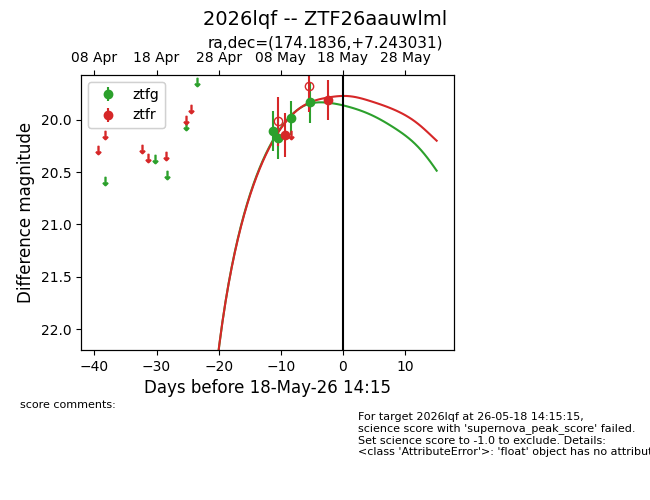
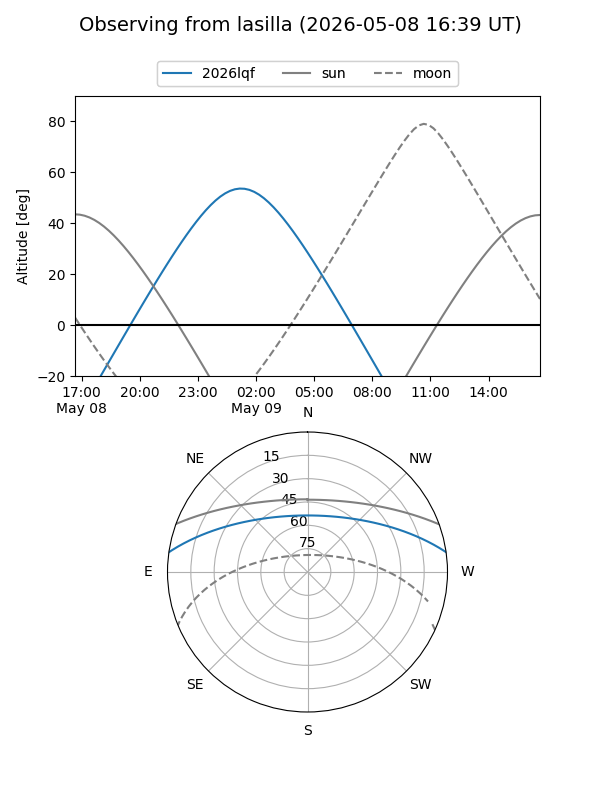
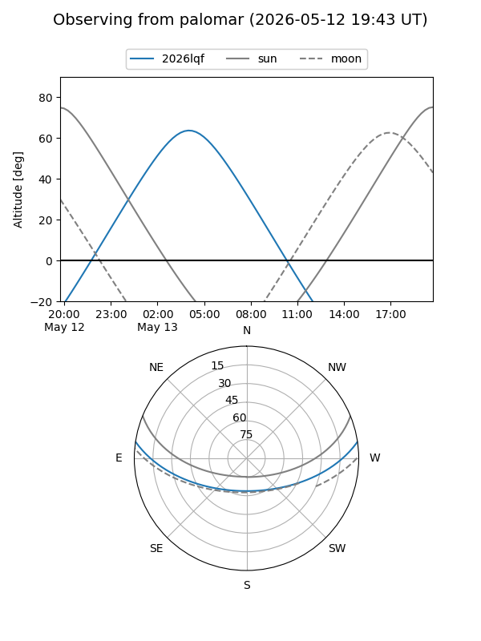
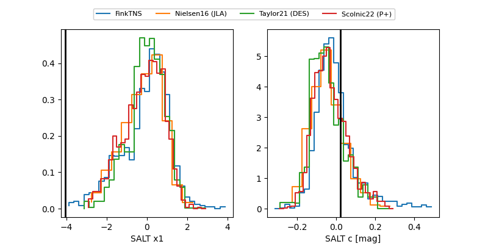

2026lqf
Target 2026lqf at 2026-05-18 14:16
Aliases and brokers:
FINK: link
Lasair: link
ALeRCE: link
TNS: link
YSE: link
alt names
ZTF26aauwlml (ztf,fink_ztf)
2026lqf (tns,yse)
Coordinates:
equatorial (ra, dec) = 174.1836,+7.24303
equatorial (HMS+DMS) = 11:36:44.07,+07:14:34.91
galactic (l, b) = (257.8109,+63.36593)
Flags:
Photometry:
last ztfg=19.83, ztfr=19.81
4 ztfg, 2 ztfr detections
Lightcurve

Visibility


Additional plots
